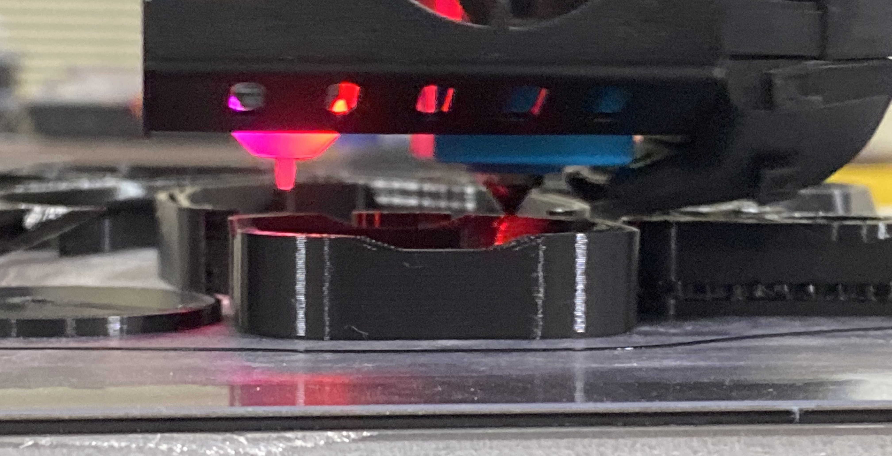

After spending over a year and a half in quarantine, I've gotten extremely tired of vented masks being downplayed as "ineffective" because they let virus particles through their vents. Because of this, I have set out to start making vented masks that are easier to breath with, but do not leak virus particles into the air. I also want the mask to look good and be usable for day to day life.
Welcome to TeenyTek!
TeenyTek is a personal repository of information for my tech projects.
Feel free to look through other pages. You might find something helpful or entertaining!
If you want to see my projects, check out my YouTube channel here!
News

Making new and improved vented masks! Far better than anything the CDC and WHO has seen before!
Latest Posts
I have recently been working at St. Thomas School as an IT Intern, and they recently have asked me to design and produce battery pack protectors for their battery supply. The main problem that needed to be solved was protecting the plugs from fall damage, as the plugs could destroy the battery if lateral force is applied to the plugs. I came up with a simple 3D printed design that looks like a little hat that goes on top of the battery with a hatch that the plug can go into. It is more than adequate to protect the plugs from fall damage, while keeping the battery pack looking new and refined.
Today is my wonderful girlfriend's 17th birthday, and I wanted to make her something special. Something that reflected our relationship but also was useful and durable. As I was scrolling through reddit (as most guys do when they aren't creative) I saw someone mention making a lithophane for their significant other. When I did some research, I found that there were generators that could take an image and generate an .stl file that could be used to print out a solid version of an image.